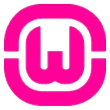
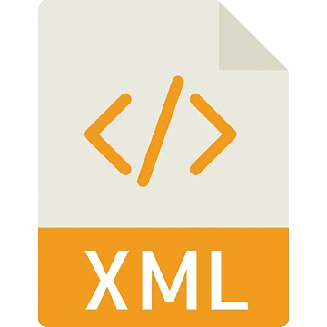

À propos de moi
Je m'appelle Enzo Pace, étudiant en BTS Systèmes Informatiques aux Organisations (SLAM). Passionné par le développement logiciel et les nouvelles technologies, je développe des compétences en programmation, gestion de projet IT, et travail d'équipe.
Télécharger mon CV
-
2023 - 2025BTS SIO SLAMCliquez pour plus d'informations.
-
2024 - Aujourd'huiEurodislogCliquez pour plus d'informations.
-
2023 - 2024RE/MAX FranceCliquez pour plus d'informations.
-
2021 - 2023Baccalauréat STI2DCliquez pour plus d'informations.
Langages
Python
JavaScript
HTML
CSS
Java

VBA
C#
PHP

JavaFX
ASP.NET
TypeScript
Outils
VS Code
IntelliJ IDEA

WAMP
GitHub

Notion

VB6

XML
SQL

PostMan
Docker
Git
Figma
MongoDB
Visual Studio
Frameworks et bibliothèques
React
Django
Express.js
Bootstrap
jQuery
Node.js